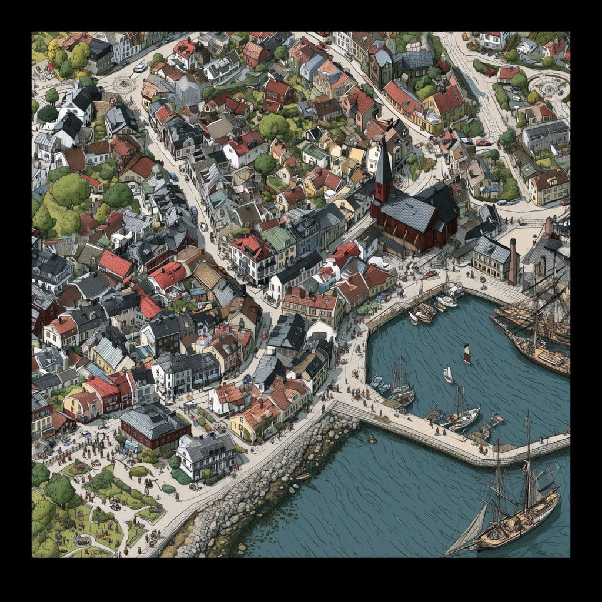

Instruktioner
Så använder du markören
1. Skriv ut markören
- Skriv ut bilden i verklig storlek (100 %), så att den blir 20 cm bred. Mät gärna efter – fel storlek gör att scenen hamnar fel i rummet.
- Använd vanligt vitt papper, gärna matt. Glansigt papper kan ge reflexer som gör bilden svår för kameran att se.
2. Sätt upp den på väggen
- Sätt markören på en vägg, med mitten av bilden 1,5 meter över golvet.
- Häng den rakt, slätt och platt mot väggen – inga veck eller bubblor. Tejpa gärna i alla fyra hörnen.
- Välj en vägg med fri golvyta framför, några meter. Julkalenderns scener visas i rummet framför väggen.
Tips
- Ha bra, jämnt ljus i rummet. Undvik att solen eller en lampa lyser rakt på markören.
- Rör telefonen lugnt. Om scenen hamnar snett, starta om appen och rikta mot markören igen.
- Det hjälper om golvet syns i kameran – appen använder det för att placera scenen på rätt höjd.
- Var uppmärksam på din omgivning när du tittar genom kameran, och låt gärna barn använda appen tillsammans med en vuxen.
Markörer
-
Test & Review

-
Graf